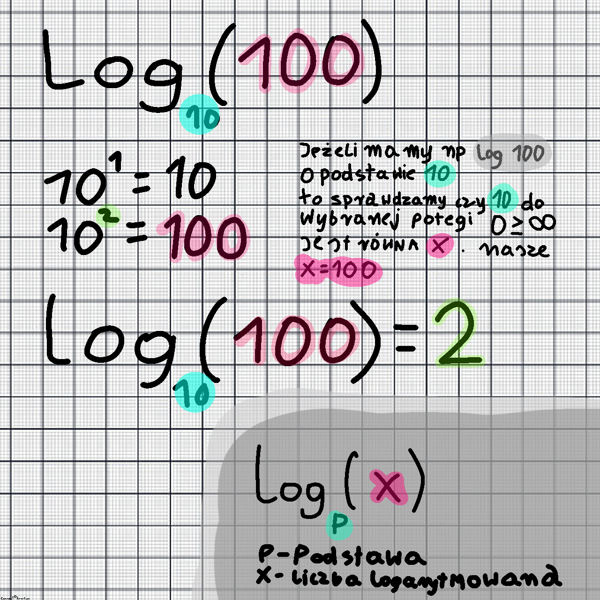
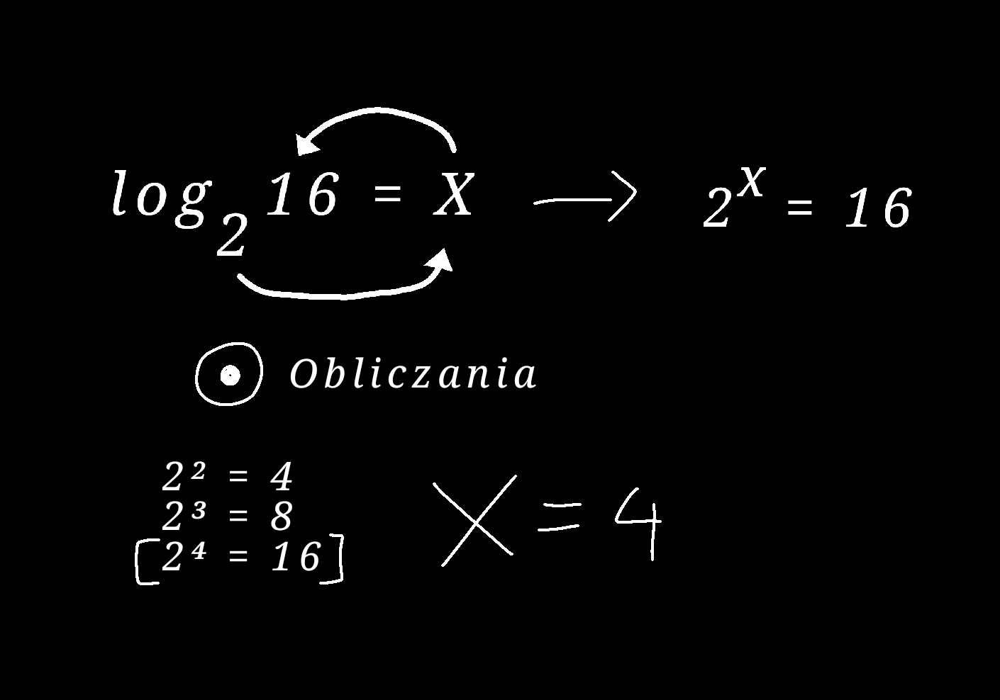

Prezentacja O Logarytmach
Krystian Popiołek
Na końcu prezentacji będą zadania dla
osub kturzy cha sprawdzić swoją wiedzę
Ważne :
Logarytm jest miarą względnej zmiany
Kto wymyślił logarytmy
John Napier (1550-1617): Szkocki matematyk
był uważany za twórcę logarytmów.
W 1614 roku gdy miał 64 lata opublikował swoje dzieło
"Mirifici Logarithmorum Canonis Descriptio,"
w którym przedstawił pierwszą tabelę logarytmów.
Logarytmy pomagały w wykonywaniu skomplikowanych obliczeń,
takich jak mnożenie i dzielenie, za pomocą
prostszych operacji dodawania i odejmowania.
Logarytm jest funkcją odwrotną do funkcji wykładniczej. Dlatego przydaje się wszędzie tam, gdzie rozwiązuje się równanie wykładnicze np. do czasu, kiedy rozpad promieniotwórczy doprowadzi do danego stężenia pierwiastka.
Jak obliczyć logarytmy ?
powiedzmy ,że naszym zadaniem jest
Log10(100)
logarytm 100 o podstawie 10
więc naszym
x=100
p=10
p²
10² = 100
więc odpowiedź to
logarytm ze 100 o
podstawie (p=10)
jest równy 2

można wytłumaczyć to jeszcze w drugi sposób
obliczamy:
wszystkie możliwe potegi zaczynając od 2 dla
naszej podstawy
aż w końcu
znajdziemy wynik ruwny tego co
jest w logarycji
w tedy naszym wynikiem jest ta potęga kturej użyliśmy

Oto Quiz z Logarytmów ktury zaprogramowałem w JS
dla uczniów
Dziękuję za Uwagę
żródła : książka
autorzy : Krystian Popiołek
Jezyki : Js , Html , KrystianParticlesLiblary
[k.p] consout © copyright do not disturbute
moje stronki
kashumy.github.io
wenglon.github.io